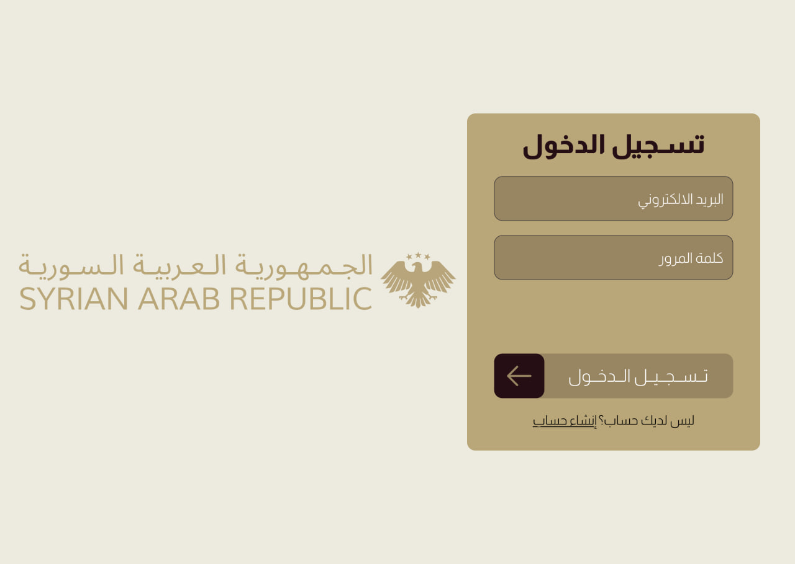
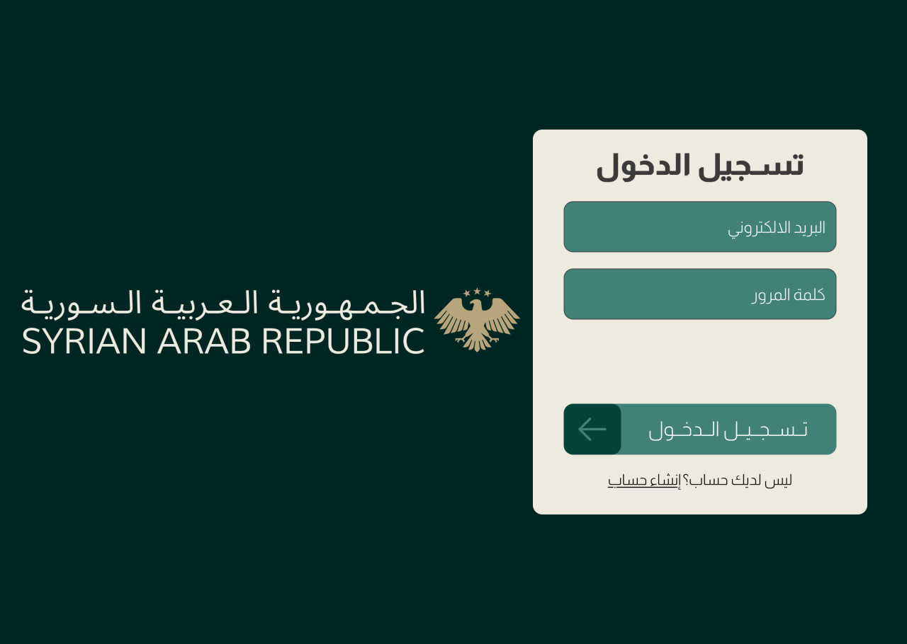
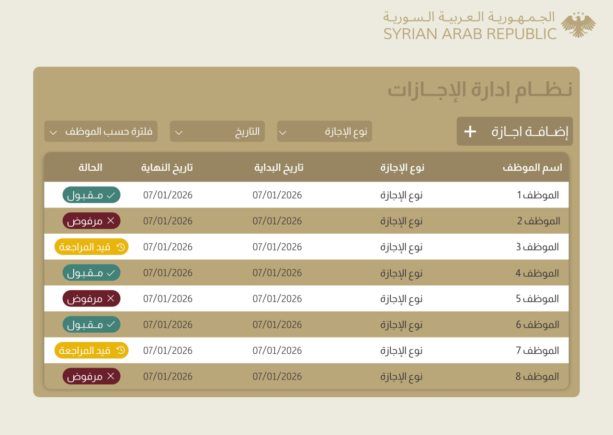
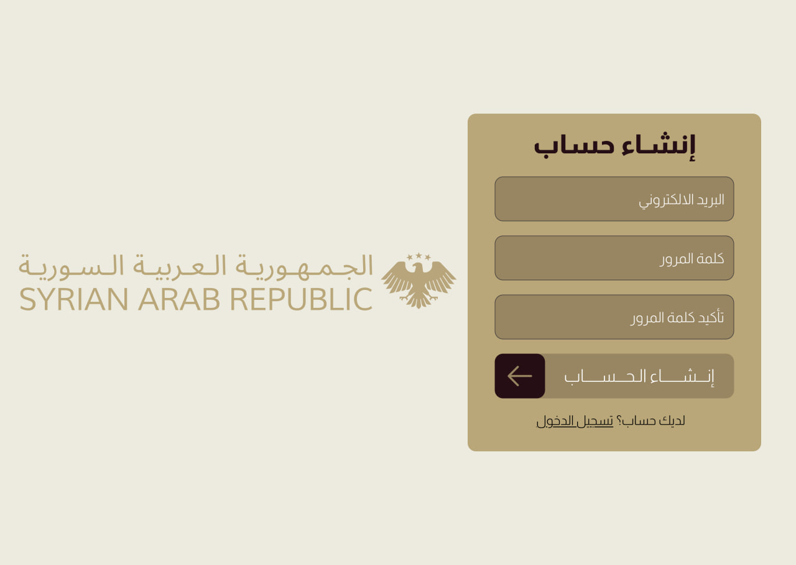
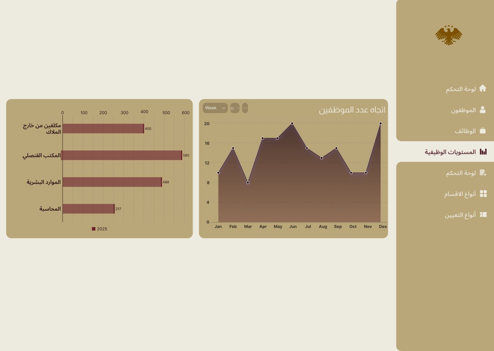
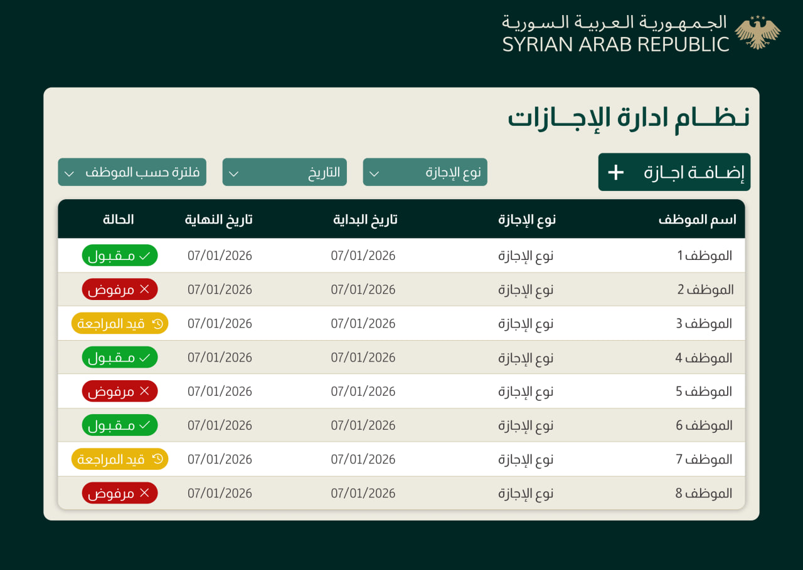
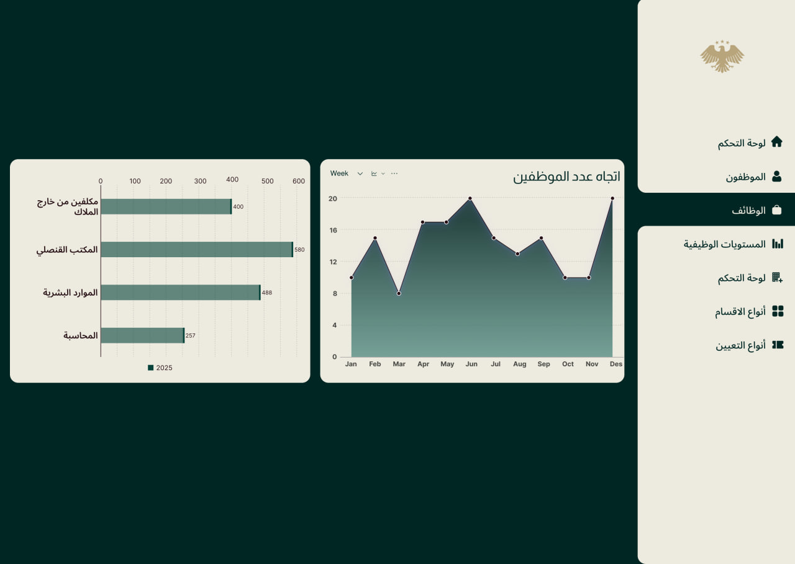
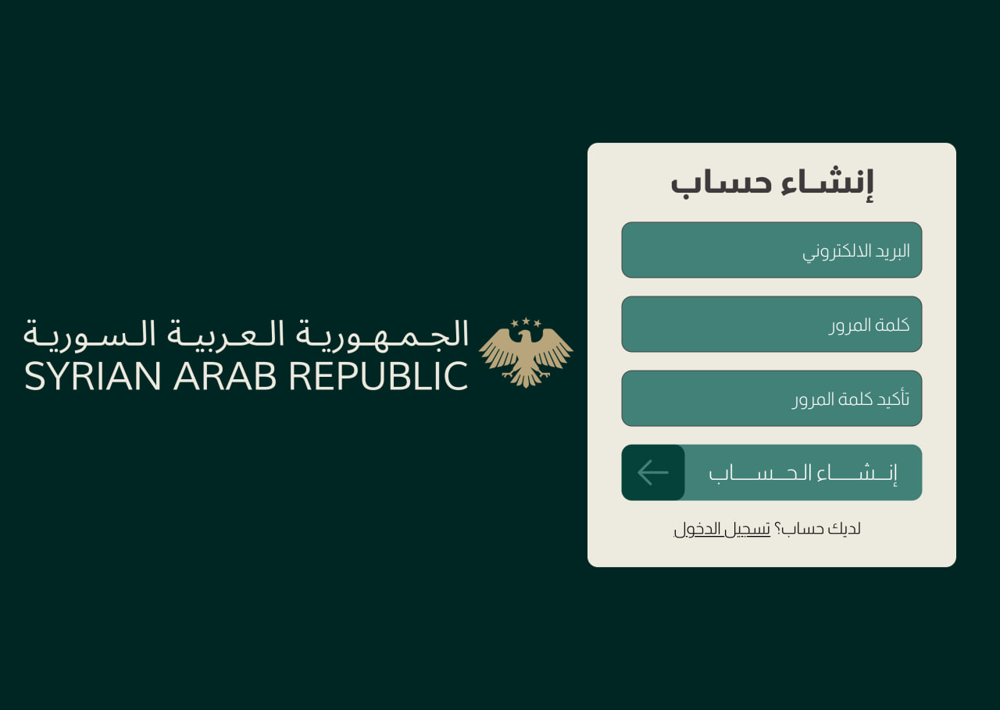

Case Study — UI/UX Design
A comprehensive administrative dashboard and digital services platform designed to modernise government operations across the Syrian Arab Republic.

Light Mode
Dark ModeThe Syria Digital System is a unified digital platform developed to centralise HR operations, employee management, leave tracking, and performance analytics for government entities.
Government systems in Syria were largely paper-based or fragmented across incompatible software. The challenge was to design an interface that felt intuitive for civil servants with varying levels of digital literacy, while meeting formal institutional standards.
How do you make a government system feel trustworthy, clear, and human — without sacrificing institutional authority?
Research focused on understanding the daily workflows of government employees, identifying pain points in existing paper-based processes, and studying comparable digital governance platforms globally.
User Interviews
Conducted interviews with 20+ civil servants across multiple departments to map real workflows and frustrations.
Competitive Analysis
Analysed 6 government platforms from the MENA region and Europe, extracting UX patterns that balance authority with clarity.
Accessibility Audit
Ensured WCAG AA compliance for both themes. Arabic readability and RTL input fields were tested rigorously.
Data Mapping
Mapped HR data flows, leave approval chains, and reporting structures to inform information architecture decisions.
A structured four-phase design process ensured every decision was grounded in user insight and institutional requirements.
Information Architecture
Defined the navigation structure, user roles, and data hierarchy across all modules: Dashboard, Employees, Jobs, Levels, Leave Management, and Reports.
Low-Fidelity Wireframes
Rapid wireframing of 30+ screens to validate layout concepts and information hierarchy before investing in visual design.
Design System Creation
Built a comprehensive design system in Figma with dual-theme tokens: gold/parchment palette for Light, deep forest/ivory for Dark — with full RTL component variants.
High-Fidelity UI & Prototype
Delivered 40+ high-fidelity screens with a fully linked Figma prototype for stakeholder review and developer handoff.
The Light theme draws from warm parchment and aged gold — evoking institutional gravitas while remaining approachable and clear for everyday use.
Parchment base, gold accents, deep ink — warm and institutional.
Deep forest base, ivory text, gold highlights — refined and contemporary.

Main Dashboard
Account Registration
Analytics & ReportsThe Dark theme uses a deep forest green as its foundation — a considered choice that references the Syrian flag's iconic green, lending the interface authentic national character.

Main Dashboard — Dark
Analytics — Dark
Account Registration — DarkThe fully interactive Figma prototype showcases user flows across all key modules — from login and registration through to leave requests and analytics dashboards.
The delivered system received positive reception from government stakeholders, with usability testing demonstrating marked improvements over existing processes.
Screens designed across both Light and Dark themes
Employees represented in the prototype dataset
Core modules delivered end-to-end
Complete themes with full RTL/LTR support
Designing for government is designing for everyone. The constraints became the most generative force in the creative process.
Constraints spark creativity
Working within strict institutional identity requirements forced more inventive solutions than an open brief would have allowed.
RTL is not just a mirror flip
Arabic layout requires rethinking reading weight, icon directionality, data tables, and chart labels — not simply reversing the LTR layout.
Theme systems need token discipline
Building two coherent themes from the ground up demanded a rigorous token system — colour, spacing, radius, and typography all defined as variables before a single screen was designed.
"Good design is as invisible as it is indispensable."
Work with me